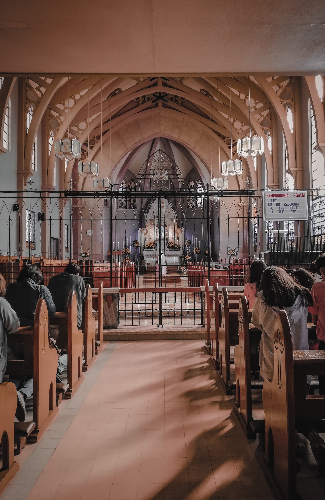
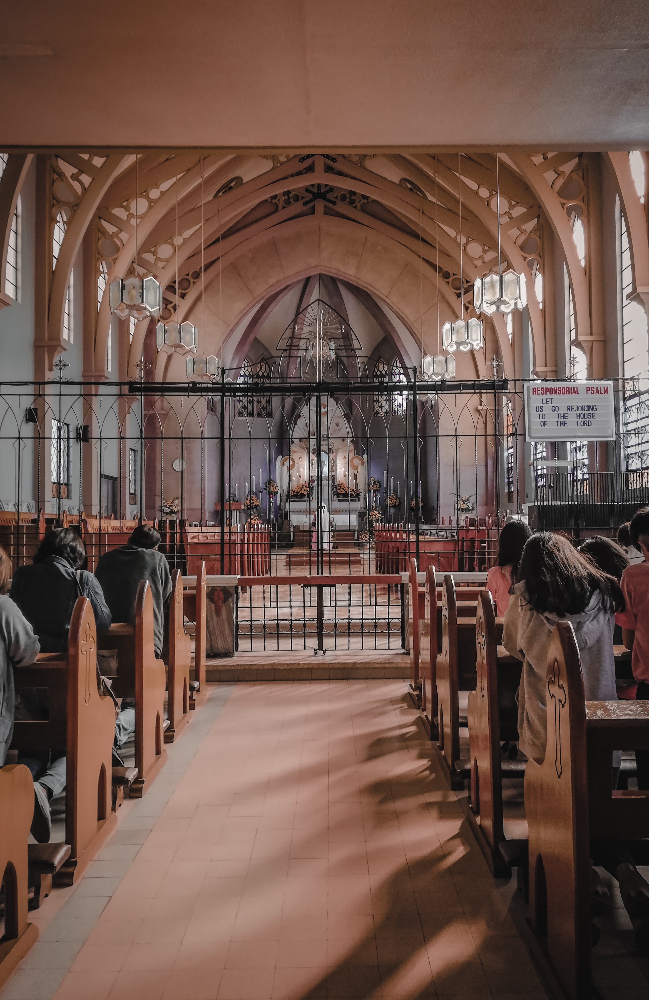
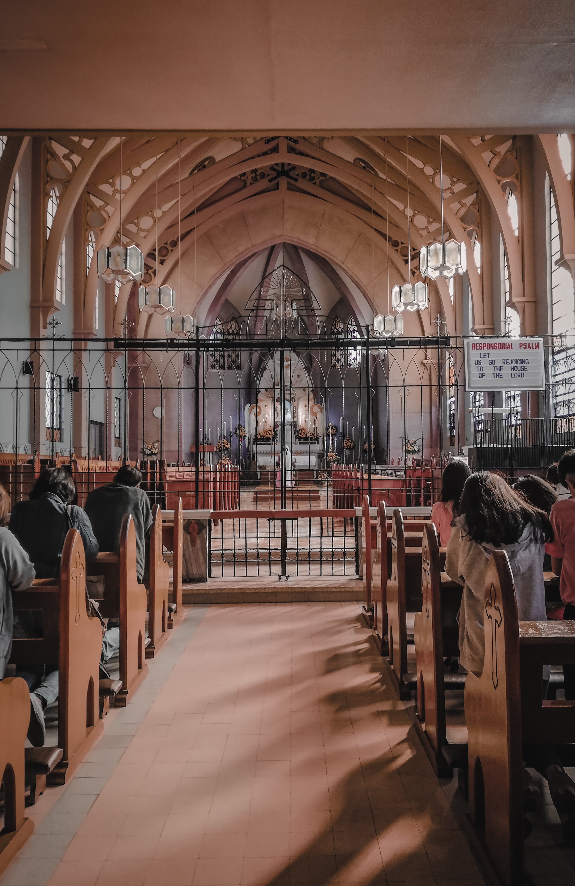

Skills/Talents
 


This is my family photo; I am second to the eldest son. I have three siblings. Our family is very kind, helpful, and positive no matter what situations we are facing, and we always look out for each other. This photo includes my girlfriend and my sister's boyfriend because they are also part of our family. My girlfriend is always here for me, even when she is mad. I don't know what to do with my life if she leaves me. I cook for her and always pick her up from work, visit her, and bring her some food to eat. Having her in my life is the biggest blessing I've received, just like my family. Family is not an important thing. It's everything.
I love to watch movies, especially when it comes to horror, sci-fi, and action movies, and my favorite movie is Spider-Man: Far From Home.
Music is one of my favorite hobbies. I'd like to play instruments and sing. Playing guitar is my passion, and this is the way to relax myself and develop inner peace.
I really love to take photos, and sometimes I travel to different places just to take photos. My skills are more focused on landscape photography.

Communication skills, Troubleshooting, Strong work ethic, Positive, Critical thinking skills,
Lack of experience, Shyness, Nervousness, Lack of confidence, Self-criticism,
Being a professional software engineer is my dream career because my former subject teacher motivates me to be like them, and he said that he saw potential in me to become a software engineer. I believe in myself that I can do this and pursue this career. Based on my research, being a software engineer has a high salary, and this course or program is in demand and very useful for future technological purposes.